Conoce los 12 principales puntos de interés turísticos y recreativos ordenados para ti.
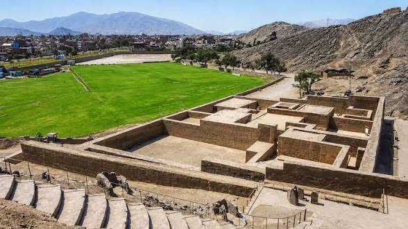
Construcción precolombina que data del siglo II. Uno de los restos arqueológicos prehispánicos más representativos de la zona este de la provincia de Lima.
Ver Ubicación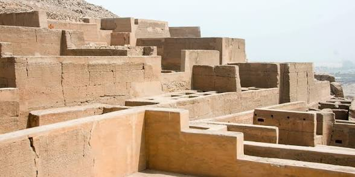
Época Intermedio Tardío, Horizonte Tardío; cultura Ychma e Inca. Zona arqueológica monumental de gran valor histórico.
Ver Ubicación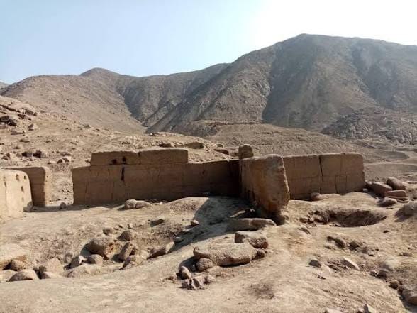
Ubicado en la localidad del mismo nombre, en el que se pueden apreciar importantes pirámides truncas de la época ancestral.
Ver Ubicación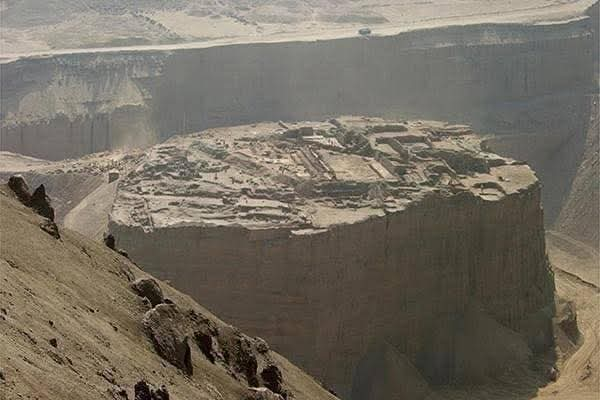
Sitio arqueológico histórico ubicado estratégicamente al lado de los terrenos de la arenera San Martín.
Ver Ubicación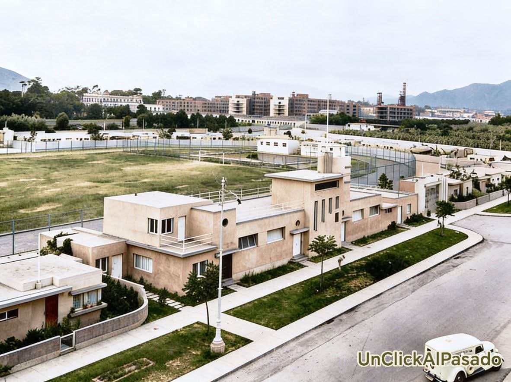
Se pueden apreciar algunos testimonios de lo que fueron las construcciones de antaño, el Palacio Municipal y sus calles próximas.
Ver Ubicación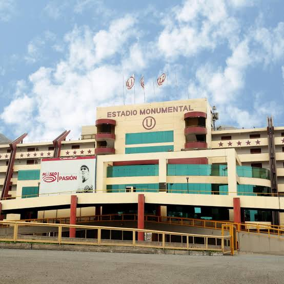
Estadio principal del Club Universitario de Deportes. Es el más grande del Perú y segundo de Sudamérica con capacidad para 80,093 espectadores.
Ver Ubicación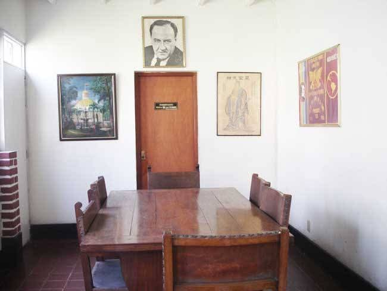
Es una casa museo histórica. El lugar fue la residencia del líder del APRA, Víctor Raúl Haya de la Torre.
Ver Ubicación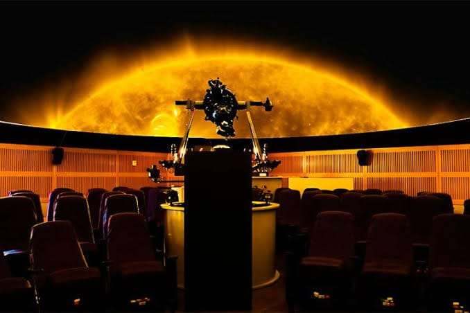
Moderno centro de divulgación científica, planetario y observatorio astronómico ubicado en el distrito.
Ver Ubicación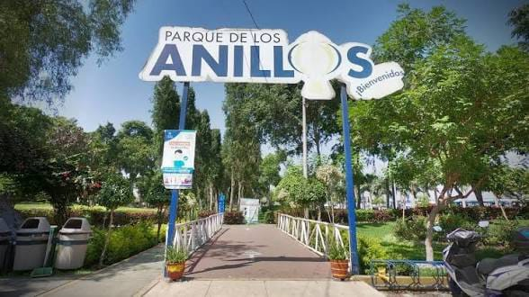
Gran espacio recreativo y familiar ubicado en el cruce de la avenida Separadora Industrial con la vía de Evitamiento, en Salamanca.
Ver Ubicación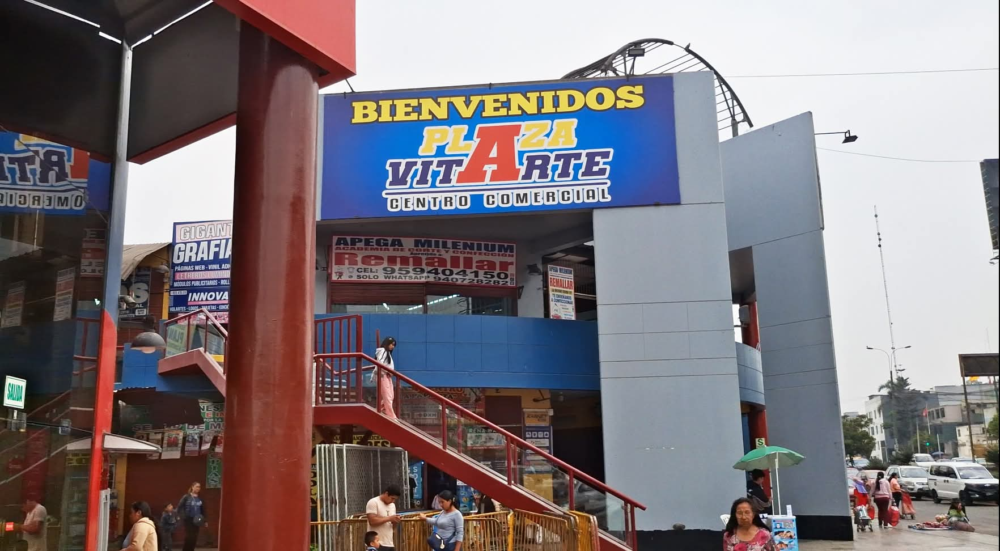
Centro comercial ubicado en el kilómetro 7.5 de la Carretera Central, en el cruce con el jirón El Progreso.
Ver Ubicación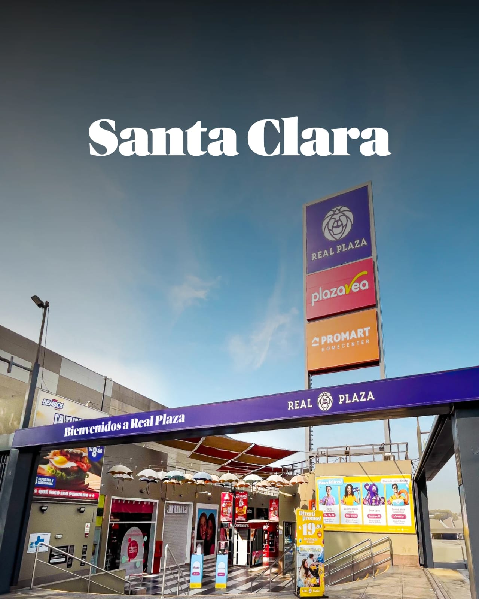
Inaugurado en 2010. Cuenta con hipermercado Plaza Vea, tienda Promart, cines Cineplanet y diversas opciones comerciales.
Ver Ubicación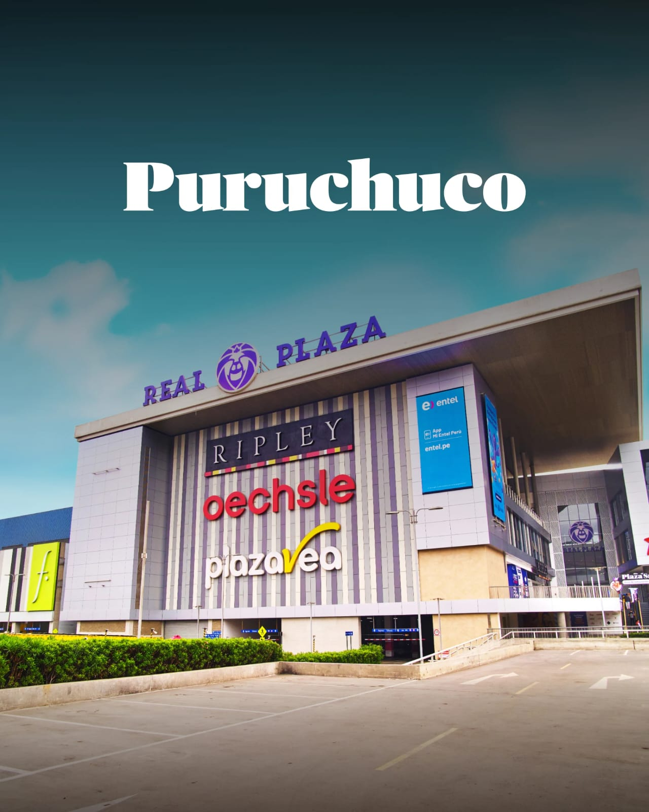
Uno de los centros comerciales más grandes del país. Cuenta con tiendas departamentales, cines, gimnasio Smart Fit y conexión con la Línea 2 del Metro.
Ver Ubicación